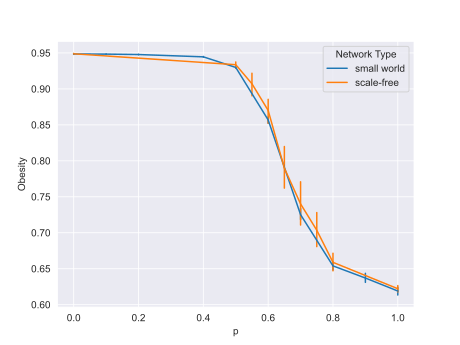

Customizing Models
For the previous use case, the model is automatically generated by the package, where each concept of the FCM is randomly assigned a value between 0 and 1. However, in some cases, concepts might have different distributions or have different ways of being generated. This tutorial will show how to use the package in such cases by first illustrating how to create a customized ABM/FCM graph and then demonstrating how to use that graph with the package in both serial and parallel.
This model used here is based on the model in the paper Modelling the Joint Effect of Social Determinants and Peers on Obesity Among Canadian Adults 1. In the paper, a hybrid ABM/FCM model was used to assess how social network structures and the knowledge shared within them play a role in preventing obesity among Canadian adults. Four different types of networks and different values for probability of accepting good knowledge (p) were used, to show how knowledge and social networks can affect the average obesity rate. However, in this tutorial, only the small world network and p of 0.5 will be utilized. These values can easily be changed by passing different arguments, which will be discussed in later steps.
Creating a custom graph
FCM
For the FCM model, an instance of networkx.classes.digraph.DiGraph will need to be created, and each node must have an attribute 'val',
so the node values can be accessed as followed: graph.nodes['node_name']['val']
There 13 concepts with 20 edges in this specific use case. The relationships between the concepts and their weights are given in in the graph below:

These edges are put in to a text file and the initial graph is created using networkx.read_edgelist():
import networkx as nx
FCM = nx.read_edgelist('obesity.txt', nodetype=str, data=(('weight', float),), create_using=nx.DiGraph())
Each node will then be assigned an attribute 'val' that has the node value.
Since each concept of the model will be generated in a different way (more details can be found in the paper), the val
attribute can be added as below for each node:
FCM.nodes["Fatness_Perceived_as_Negative"]["val"] = 0.8
FCM.nodes["Exercise"]["val"] = np.random.wald(1, 0.01)
Every agent will have the same FCM graph, so all code above can be put into one function called create_obesity_FCM():
import numpy as np
import networkx as nx
AGE_RELATED = np.loadtxt('age_related.txt')
INCOME = np.loadtxt('income.txt')
def create_obesity_FCM():
FCM = nx.read_edgelist('obesity.txt', nodetype=str, data=(('weight', float),), create_using=nx.DiGraph())
# Fatness_Perceived_as_Negative and Belief_in_Personal_Responsibility will both start at 0.8
FCM.nodes["Fatness_Perceived_as_Negative"]["val"] = 0.8
FCM.nodes["Belief_in_Personal_Responsibility"]["val"] = 0.8
# Exercise has inverse gaussian distribution with mu of 1 and lambda of 0.01
FCM.nodes["Exercise"]["val"] = np.random.wald(1, 0.01)
# Food_Intake is around 0.0027 more than Exercise
FCM.nodes["Food_Intake"]["val"] = FCM.nodes["Exercise"]["val"] + 30.0/11000.0
# Knowledge has inverse gaussian distribution with mu of 1 and lambda of 0.01
FCM.nodes["Knowledge"]["val"] = np.random.wald(1, 0.01)
# Income is randomly assigned based on the distribution from income.txt
FCM.nodes["Income"]["val"] = np.random.choice(INCOME[:, 0], p = INCOME[:, 1]/100)
# Age-related concepts. Each age will have a different distribution for Stress, Depression, etc.
# These information are stored in age_related.txt
ageInd = int(np.random.choice(AGE_RELATED[:, 0], p = AGE_RELATED[:, 1]/100) - 18)
FCM.nodes["Age"]["val"] = AGE_RELATED[ageInd][2]
propStressed = AGE_RELATED[ageInd][4] / 100
FCM.nodes["Stress"]["val"] = np.random.choice([1, 0], p = [1-propStressed, propStressed])
propDepressed = AGE_RELATED[ageInd][3] / 100
FCM.nodes["Depression"]["val"] = np.random.choice([0, 1], p = [1-propDepressed, propDepressed])
FCM.nodes["Antidepressants"]["val"] = 0
if FCM.nodes["Depression"]["val"] == 1:
propAnti = AGE_RELATED[ageInd][5] / 100
FCM.nodes["Antidepressants"]["val"] = np.random.choice([0, 1], p = [1-propAnti, propAnti])
propHealth = AGE_RELATED[ageInd][9] / 100
FCM.nodes["Physical_Health"]["val"] = np.random.choice([0, 1], p = [1-propHealth, propHealth])
probObesity = AGE_RELATED[ageInd][6:9] / 100
# Obesity [0, 0.5, 1] for normal, medium, obese
FCM.nodes["Obesity"]["val"] = np.random.choice([0, 0.5, 1], p = probObesity)
# Weight_Discrimination is the same as Obesity
FCM.nodes["Weight_Discrimination"]["val"] = FCM.nodes["Obesity"]["val"]
return FCM
Here are the complete files that were used above:
The last two files were also combined into one excel file: distributions_of_concepts.xlsx
ABM
After having a function to create an FCM for each agent, an instance of networkx.classes.graph.Graph will be used for the ABM.
The type of graph will depend on the model.
Each agent, however, must have an 'FCM' attribute that stores its FCM graph for the package to function correctly.
The FCM graph can the be accessed by abm_graph.nodes[agent]["FCM"].
As mentioned above, the simulation will be run with a small world network, so networkx.watts_strogatz_graph() function
is used here. Every agent will then get its own FCM graph by using create_obesity_FCM. The completed ABM/FCM graph will
be passed as an argument to the constructor of the HybridModel to be used with the package:
# Same number of nodes and degree as indicated in the paper
G = nx.watts_strogatz_graph(2412, 11, 0.05)
for agent in G.nodes():
G.nodes[agent]["FCM"] = create_obesity_FCM()
hm = md.HybridModel(G)
Running the simulation
Running the simulation with a custom graph using the package is the same as running the simulation with a graph generated by
create_graph or generate_model.
Note
For more details about serial run, please refer to the serial use case.
For more details about parallel run, please refer to the parallel use case.
In the paper, the simulation will be repeated for 10 times, each time for 20 steps. At every time step, each agent will only
interact with one neighbor at random, and only the knowledge concept of the agents will participate in the interaction. If the value of the knowledge concept
from the influencing agent is greater than that of the influenced agent, the influenced agent will have p probability
to accept the knowledge from the influencing agent and, thus, take on the same value,
while if it is smaller, the probability of accepting is 1- p. (More details about the interaction
between agents can be found in the paper).
Serial
The interaction function is provided below. It takes two arguments, HybridModel and the probability p, which
will be 0.5 in this case (as mentioned above). However, the value of p can be changed to anything between 0 and 1.
At the end the simulation is run using run_serial:
import cuda_hybrid as md
def knowledge_influence(influenced, influencing, prob):
choices = np.array([influenced, influencing])
weights = [1.0,0.0]
if influencing > influenced:
weights = [1.0-prob, prob]
elif influencing < influenced:
weights = [prob, 1.0-prob]
return np.random.choice(choices, p=weights)
def obesity_interact(hm, p):
if hm.ABM_adj.shape[0] <= 1:
return
# loop through each agent
for agent in range(hm.ABM_adj.shape[0]):
# grab the neighbors
neighbors = hm.get_neighbors(agent)
if len(neighbors) != 0:
friend = np.random.choice(hm.get_neighbors(agent))
# get the numeric index for EconomicDevelopment and AbilityOfInsurgentsToControlThePopulation
knowledgeIdx = hm.fcm_labels["Knowledge"]
# agents now influence each other
hm.node_future_val[agent][knowledgeIdx] = knowledge_influence(
hm.node_val[agent][knowledgeIdx], hm.node_val[friend][knowledgeIdx], p
)
for _ in range(10)
md.run_serial(hm, ["Obesity", "Physical_Health"], [0.05, 0.05], 10, obesity_interact, [hm, 0.5], 20)['Obesity']
The average value of obesity is 0.927949481844901.
Parallel
The interaction function f is provided below:
@cuda.jit()
def f(hm):
if hm.ABM_adj.shape[0] <= 1:
return
# loop through each agent
for agent in range(hm.ABM_adj.shape[0]):
# grab the neighbors
friend = random.choice(hm.get_neighbors(agent))
# get the numeric index for Knowledge
knowledgeIdx = hm.fcm_labels["Knowledge"]
# agents now influence each other
hm.node_future_val[agent][knowledgeIdx] = knowledge_influence(
hm.node_val[agent][knowledgeIdx], hm.node_val[friend][knowledgeIdx]
)
The above function calls the obesity_interact helper function, which simulates the interacting rules between the influenced and the influencing agents:
@cuda.jit()
def knowledge_influence(influenced, influencing):
probability = 0.5
if influencing > influenced:
if random.random() < probability:
return influencing
elif influencing < influenced:
if random.random() < 1 - probability:
return influencing
return influenced
Warning
Like in the previous parallel use case, every function that is used on the GPU will have to be annotated with @cuda.jit()
before the definition of the function. In this case, both knowledge_influence and f have the annotation
After that, arguments, including the hybrid model, a list of focus nodes, a list of thresholds for the focus nodes, the maximum number of iterations, a list of arguments for function f, and, optionally, the number of steps, will be passed to the cuda_main function to run the simulation. In the paper, the simulation was run for 20 steps, so the same thing is being done here:
cuda_main(hm, ["Obesity", "Physical_Health"], [0.05, 0.05], 10, np.array([hm]), dtype=int), 20)
The result for this is displayed as followed:
average Obesity: 0.910130181814703
average Physical_Health: -0.8049388421362708
------ Time: 1293.4581656455994
Data Visualization
The model can be run with different values of p, and the results for the average value for the Obesity concept after 10 replications with two different networks, small world network and scale-free network, are displayed below:
Note
For more details about how to create these graphs, please refer to Creating graphs.
Note
The details about how to set up with different networks can be found int the paper Modelling the Joint Effect of Social Determinants and Peers on Obesity Among Canadian Adults 1
References